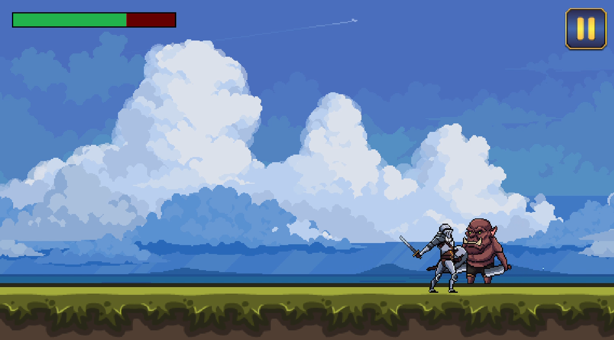
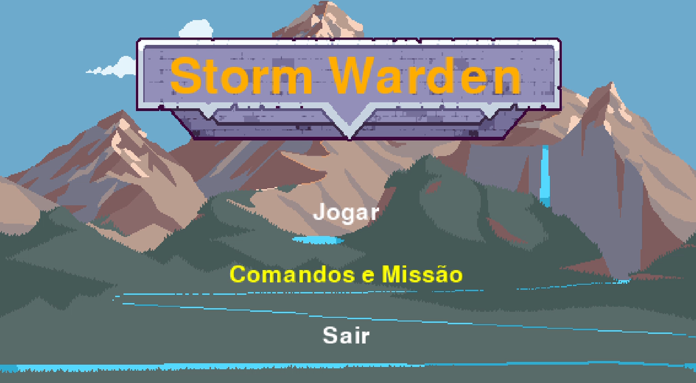
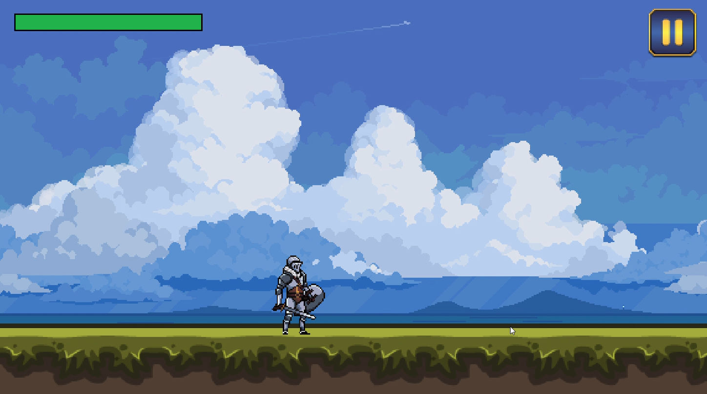
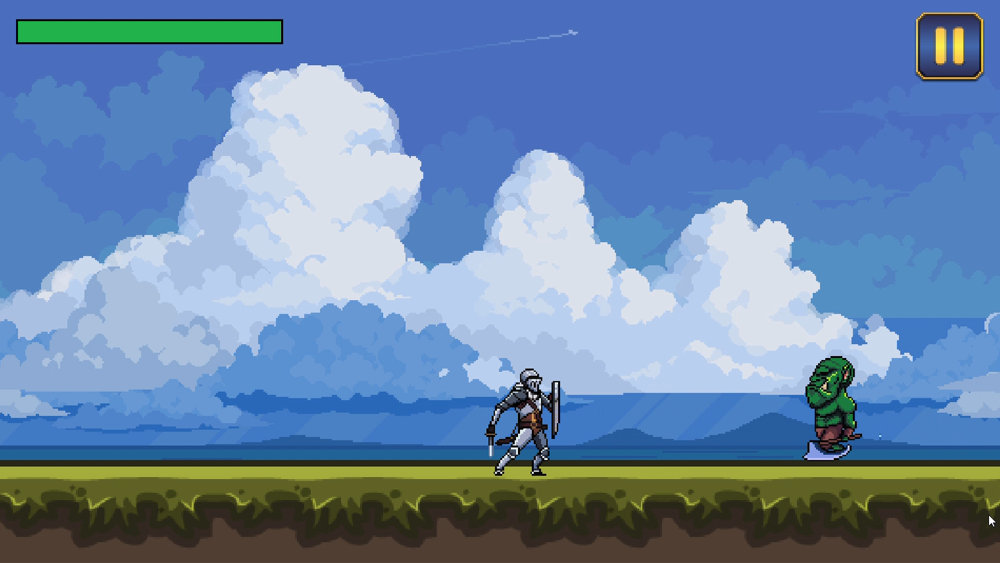
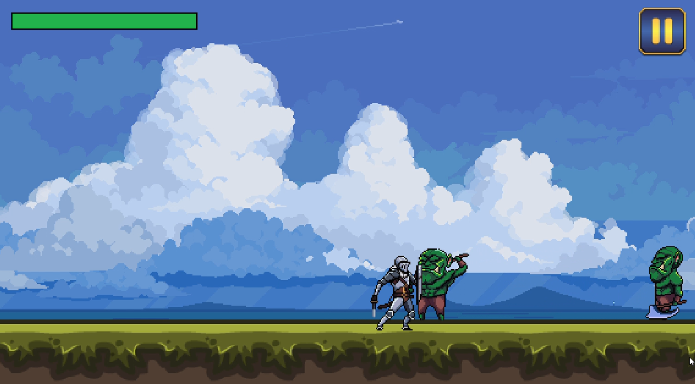
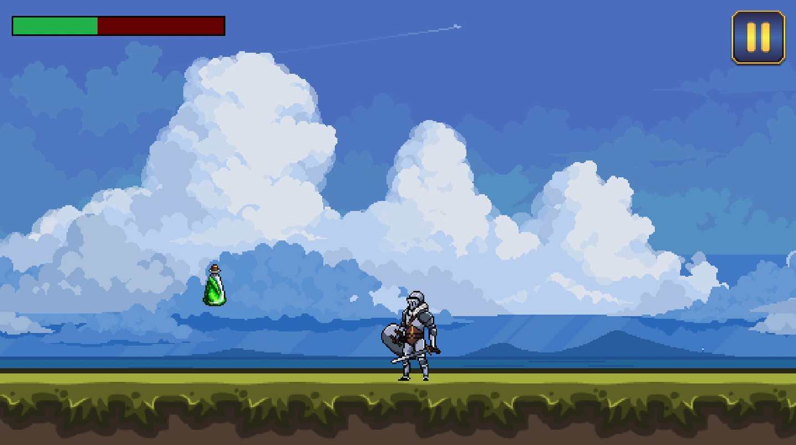

Sobre mim
Oi, eu sou Davi Béber Ribeiro. Antes de focar para a área de TI,
eu estudava para concurso de carreiras militares. Atualmente foco na minha transição em construir uma
base sólida, buscando minha primeira oportunidade como desenvolvedor estagiário ou júnior.
Embora sempre estivesse conectado no dia a dia como qualquer pessoa, meu interesse em entender como a tecnologia funciona começou no ensino fundamental, quando as aulas de robótica acenderam-me a curiosidade. Na época, embora aquela experiência tenha me fascinado, eu não fazia ideia de como trilhar um caminho profissional nesse universo tecnológico. Essa clareza só veio anos depois, quando escolhi minha graduação e decidi focar de verdade na área tecnológica.
Habilidades
-

HTML:
Estruturação semântica e organização de hierarquia de conteúdos.
-

CSS:
Estilização moderna, foco em arquitetura visual limpa e design adaptável para mobile e desktop
-

Javascript:
Desenvolvimento de scripts dinâmicos, controle de eventos de usuário (addEventListener), declaração de constantes para escopo de funções e manipulação da estrutura DOM.
-

GIT:
Conhecimento com commit, push e branch secundarias para repositorio e conexao com o GitHub
-
GitHub:
Conhecimento na criação de repositórios e práticas de README.
-

Python:
Experiência com linguagem procedural e POO, alem de exeperiências em práticas recentes com uso de bibliotecas como pygame,numpy e sched.
-

Java:
Conhecimento básico. Fundamentos de POO (Programação Orientada a Objetos) consolidados.
-

SQL:
Revisão pendente.
Projetos
Storm Warden
Jogo 2D em Python (Pygame) & POO






Deslize para o lado
Descrição do projeto:
Uma demonstração de jogo 2D desenvolvida como projeto acadêmico para praticar conceitos fundamentais de desenvolvimento de software e lógica de programação em Python. O objetivo principal deste projeto foi aplicar na prática conceitos essenciais de programação através da criação de um jogo interativo. Durante o desenvolvimento, foram explorados e implementados:
1. Programação Orientada a Objetos (POO): Estrutura de entidades do jogo, classes e métodos.
2. Desenvolvimento 2D com Pygame: Manipulação de cenários, camadas em parallax e mecânicas de plataforma.
3. Lógica de Jogos: Loop principal de renderização, tratamento de eventos e colisões.